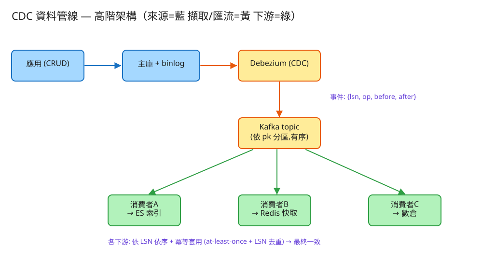

D 串流計算/儲存分發 看故事就懂 輕鬆讀 25 分鐘
想像一間公司有一本「總帳」（主資料庫），記著所有商品、價格、庫存。 但其他部門也想用這份資料：搜尋部門要拿去做「站內搜尋」、快取部門要放熱門資料讓網頁秒開、報表部門要做月報。
問題來了：總帳每天一直在改。那其他部門手上的副本，怎麼跟著一起變？難道每改一筆，就打電話通知三個部門各自手動改？這太容易出錯了。
很多人第一個念頭是：「改總帳的時候，順手也幫搜尋部門改一份不就好了？」這招叫雙寫，聽起來合理，其實是個大坑。
更糟的是順序會亂：兩個人幾乎同時改同一件商品的價格（先改成 80、再改成 120）， 但送到搜尋部門時順序顛倒，副本就停在 80——新的被舊的蓋掉了。
💭 停一下：為什麼「改完總帳，順手也改副本」這招這麼脆弱？
別被「資料管線」嚇到。整件事其實就是闖 4 關：
好消息：資料庫本來就會偷偷記自己改過什麼——這本內部小帳叫 binlog（變更日誌）。 我們不用改任何商業程式，只要派一個小幫手去讀這本小帳，就知道每一筆改動。
每一筆改動會被整理成一則變更事件，內容包含：是新增/修改/刪除（op）、改之前長怎樣（before）、改之後長怎樣（after）。
每則變更事件都貼一個遞增的流水號（叫 LSN，可以想成「第幾號改動」）。這個小小的號碼，後面會立大功。
整理好的變更事件，丟進一條廣播管道（工程上叫 Kafka）。任何想同步的部門都來訂閱這條管道，各看各的、互不干擾。
每個部門收到事件，就照流水號順序更新自己的副本：看到「新增」就加一筆、「修改」就覆寫、「刪除」就拿掉。改完，副本就跟總帳一樣了。
這個系統最怕三件事，每個設計都是為了避開某個「怕」。

✏️ 用 Excalidraw 開啟編輯（diagram.excalidraw）白話導讀，由上到下、由左到右：
看完上面，這些詞你其實都已經懂了，這裡只是把「工程術語 ↔ 白話」對起來，Part 2 會用到：
| 工程術語 | 白話解釋 |
|---|---|
| CDC（變更資料擷取） | 幫總帳裝一台自動廣播機：一改就廣播「我改了什麼」 |
| binlog / WAL | 資料庫的「監視器錄影」：它本來就會記下自己改過什麼 |
| Debezium | 看錄影的小幫手：讀 binlog、整理成標準變更事件 |
| 變更事件（op/before/after） | 一則改動的紀錄：是增/改/刪、改前長怎樣、改後長怎樣 |
| LSN / offset（流水號） | 每則事件的遞增號碼：排序用、去重用、書籤用 |
| 主庫（來源表） | 「總帳」：唯一的真相來源 |
| 衍生視圖 / 下游副本 | 各部門照總帳抄的副本（搜尋索引、快取、報表） |
| 雙寫（dual write） | 改總帳順手也改副本——容易其中一邊失敗 → 永久不一致（避雷） |
| at-least-once | 「至少送一次」：寧可重送也不漏送 |
| 冪等 | 同一則套幾次結果都一樣，所以敢放心重送 |
| 消費位移（offset） | 某部門「已經套到第幾號」的書籤 |
| 最終一致 | 副本會晚總帳一點點，但最後一定追上 |
| 初始快照 | 新部門先把總帳「現有的全部」抄一次，再開始接後續改動 |
| 估什麼 | 大概數字 | 所以呢？ |
|---|---|---|
| 總帳每天改幾筆 | ~5000 萬筆 | 平均每秒幾百筆，其實不算多 |
| 每則事件多大 | before+after ≈ 1 KB | 一天的「變更日報」約 50 GB |
| 幾個部門訂閱 | 搜尋 + 快取 + 報表 = 3 | 同一份事件被讀 3 次，互不影響 |
| 副本可以慢多久 | 搜尋 < 5 秒、報表可分鐘級 | 決定要派幾個工人、一次套幾筆 |
💭 停一下：流量這麼小，為什麼還是個有難度的題目？
這題的「通知單」長這樣（看註解就懂）：
一則變更事件（CDC 的核心契約）
{
"lsn": 10231, // 流水號：第幾號改動（排序 + 去重用）
"op": "u", // 動作：c=新增 u=修改 d=刪除
"pk": 42, // 哪一筆（主鍵）→ 同一筆永遠排同一隊
"before": { 改之前長怎樣 }, // 修改/刪除才有
"after": { 改之後長怎樣 } // 新增/修改才有
}部門怎麼「訂閱」與「回報進度」：
GET /changes?after_lsn=10000 給我：流水號 10000 之後的所有事件
POST /consume 我套用了一批，請幫我記住「套到哪」
GET /offset 我現在套到第幾號了？（書籤）唯一的真相：商品編號、名稱、價格…。應用程式照常增刪改。
一則一則的改動紀錄，只增不改、照流水號排好：流水號、動作(c/u/d)、改前、改後。
每個部門一份，形狀各自不同（搜尋文件 / 快取 / 報表）。每筆多記一個 _lsn＝「這筆是第幾號改動套出來的」，重送時可比對。
記「這個部門已經套到第幾號了」。下次從這個號碼往後接著套就好。
| 哪裡會塞車 | 怎麼拓寬 |
|---|---|
| 改動太多，一條隊伍排不完 | 分成多條隊伍（依商品編號分），但「同一筆」永遠排同一隊（保證有序） |
| 某部門套得太慢、副本太舊 | 多派幾個工人並行、一次批次套很多筆 |
| 部門的副本壞了要重建 | 把書籤歸零、重放整份日報——因為冪等，重放不會弄壞 |
| 新部門剛加入，沒有舊資料 | 先做初始快照（把總帳現有的全抄一次），再接後續改動 |
| 監視器錄影被清掉（保留期短） | 加大保留期，或落後太多就重做快照 |
「Part 1 的三個怕」是核心。這裡補幾個常被面試官追問的：
讀十遍不如玩一遍。這題有一個真的可以跑的小程式，讓你親眼看到「改總帳 → 產生事件 → 副本跟著變 → 重放也不壞」：
# 啟動（在這題的 demo 資料夾裡）
cd demo
php -S localhost:8048 -t public
# 然後瀏覽器打開 http://localhost:8048op:c（含 after、流水號）。op:u（before 舊、after 新）→ 再套用 → 又一致。玩過 demo 了，來掀開引擎蓋看看「那幾關到底是哪幾段程式做的」。 好消息：核心只有三個小檔，剛好對應前面講的工作。不用會 PHP，我把程式翻成白話、只留關鍵那幾行，看註解就懂。
對總帳做一筆改動，它回傳「改之前」和「改之後」——這就是變更事件的原料。
function apply(動作, id, 欄位) {
改之前 = 總帳裡這筆現在的樣子 // before（可能是 null＝本來不存在）
if (動作 == 刪除) 從總帳拿掉這筆; 改之後 = null
else 寫入/覆寫這筆; 改之後 = 新的樣子 // after
return { before:改之前, after:改之後 }
}關鍵：它同時給你 before 和 after。真實系統不用自己算，因為資料庫的 binlog 本來就把這兩個都錄下來了。
每收到一筆改動，就分配一個遞增流水號，連同 op/before/after 一起記下來。
function append(動作, id, before, after) {
流水號 = 上一個流水號 + 1 // ← 單調遞增：第幾號改動
事件 = { lsn:流水號, op:動作, pk:id, before, after }
把事件加到日報最後面（只增不改）
return 事件
}這個「+1 的流水號」就是後面有序與去重的關鍵。真實系統的流水號來自資料庫 binlog 的位移，意思一樣。
這是全題的心臟。部門工人拿到一批事件，先照流水號排好，再一筆一筆套；套過的直接跳過。
把這批事件「照流水號由小到大」排好 // ← 保證有序
for (每則事件) {
if (事件.流水號 <= 我已套到的流水號)
跳過; // ← 冪等：套過的不再套（重送無害）
if (事件.op == 刪除) 從副本拿掉這筆;
else 以主鍵覆寫這筆（順手記下 _lsn）;
我已套到的流水號 = 事件.流水號 // ← 套完才推進書籤
}三個怕全在這段化解：排序→不怕亂序；「套完才推進書籤」→崩潰重來會重拉（不漏）；「套過的跳過」+「以主鍵覆寫」→重送也不壞（冪等）。
💭 停一下：為什麼是「套完才推進書籤」，而不是「先推書籤再套」？
| 關卡（前面講的） | 哪個檔 | 關鍵那段 |
|---|---|---|
| ① 擷取（改前/改後） | SourceTable | apply() 回傳 before/after |
| ② 貼流水號 | ChangeLog | append() 的 lsn+1 |
| ③ 照順序套用 | Consumer | 排序後的 for 迴圈 |
| ④ 不漏、不重 | Consumer | 「套過跳過」+「套完才推書籤」 |
👉 重點：真實系統會把「JSON 檔 + 迴圈」換成「真資料庫 + Debezium + Kafka」， 但上面這幾段判斷邏輯一字都不用改。所以讀懂這個小 demo，你就讀懂了這題的核心。
先不要看答案，自己用講給朋友聽的方式回答看看（講得出來才是真的懂）：
CDC 資料管線 = 幫總帳裝一台自動廣播機，讓所有副本自動跟著一起變。
4 個關卡：① 看監視器(binlog)擷取改動 → ② 給每則改動貼流水號(LSN) → ③ 用報紙方式廣播(Kafka) → ④ 各部門照順序冪等套用更新副本。
3 個怕：怕順序亂（流水號 + 同一筆排同一隊）、怕漏掉（寧可重送 at-least-once）、怕重送弄壞（套用冪等）。
工程細節一句話：別用雙寫（必不一致），改讓副本「重播總帳已發生的事」；流水號一號三用（排序/去重/書籤）；「套完才推書籤」保證不漏；副本要重建就歸零書籤重放整份日報（冪等保證安全）。
想看更精簡、面試速查用的版本？👉 前往完整版（同樣內容的工程速查格式）。